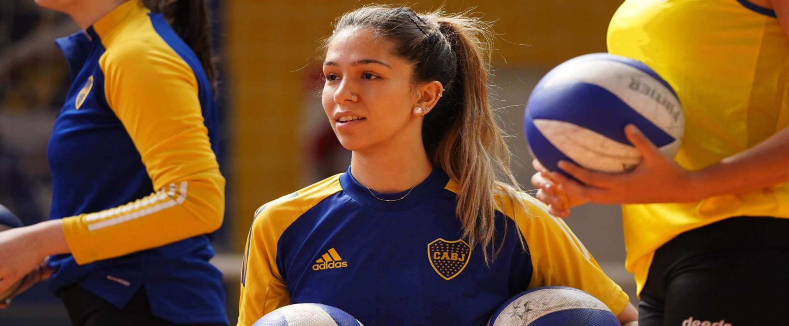

“Es una oportunidad muy grande para las dos”
Rocío Morales y Martina Fojo, jugadoras del plantel femenino
de vóley se preparan para los Juegos Panamericanos
Universitarios que se disputarán en Mérida, México. Las
Guerreras conversaron sobre su convocatoria y lo que
significa representar a Argentina.